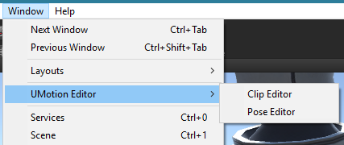
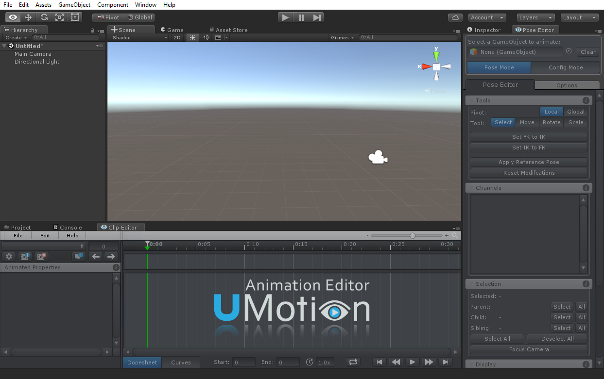
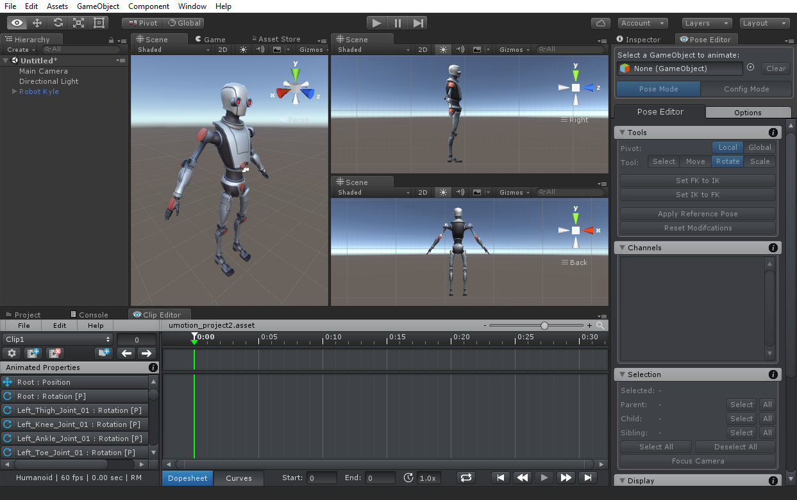
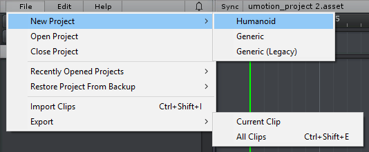
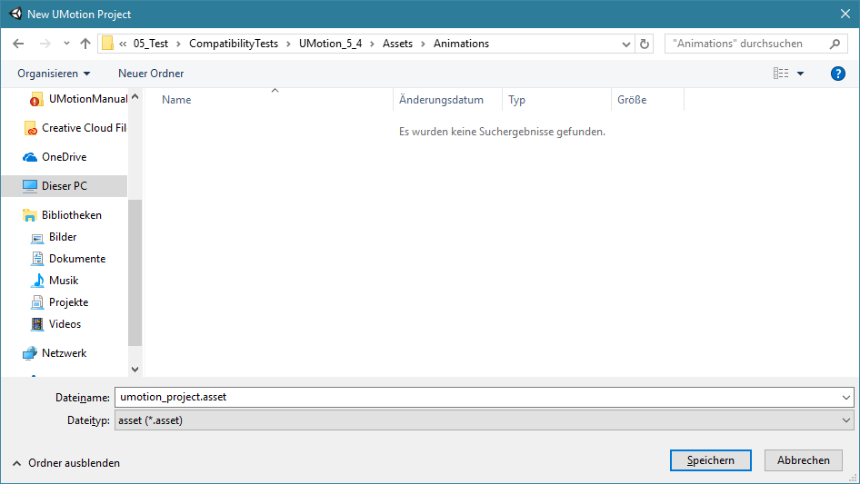
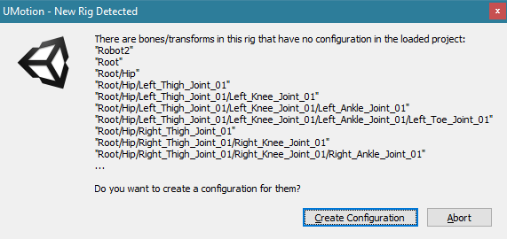
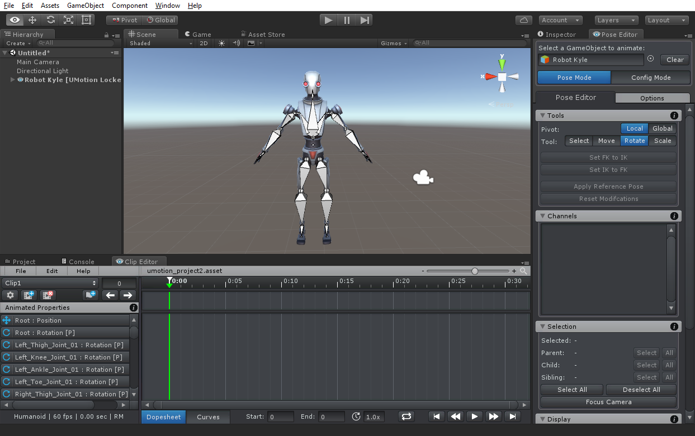

Getting Started
Installing UMotion
Congratulations! When you can read this, you've already successfully downloaded the UMotion package from the Unity Asset Store and have imported it into your project.
Imported Folders
When UMotion was imported into your project, two folders have been created in the Assets directory:
- UMotion Editor This folder contains everything UMotion needs to function properly. You can move the UMotionEditor folder anywhere in your project. UMotion resources are not added to your built game and thus won't increase your build size.
- UMotion Examples This folder contains an example scene with example animations. When using UMotion the first time, it's recommended to take a look at the examples. If you don't need them you can delete the whole folder.
Uninstalling
To remove UMotion from your project, remove both folders mentioned above.
Be careful, there may be other resources in Editor Default Resources used by other Editor Extensions.
Starting UMotion
Setup Your Workspace
Two new editor windows have been automatically added in Unity's Menu Bar.
Unity Menu Bar - Window
Click on Windows ➔ UMotion Editor ➔ Clip Editor. The Clip Editor will appear on your screen. You can now dock the window anywhere in your Unity Editor Layout. A useful position is usually at the bottom where the Project and Console Window is located in the default layout.
Once you've docked the Clip Editor, open the second window by clicking on Windows ➔ UMotion Editor ➔ Pose Editor. The window can also be docked where it fits best for you. A preferred position is usually at the right hand side where the Inspector is located in the default layout.
A typical editor layout when using UMotion
In Unity it is possible to define and save custom editor layouts. If you want, you can create a custom layout to be used when creating animations. You can switch between editor layouts depending on the current work you are doing in the editor. Editor layouts can be created, saved and changed by using the "Layout" button in the upper right corner of the Unity editor. More information regarding custom editor layouts can be found here: Unity Manual - Customize Your Workspace
You may want to add the Animator window (Windows ➔ Animator) or multiple Scene Views to that layout. You can add additional Scene Views by making a context click on the Scene View tab and clicking on Add Tab ➔ Scene View. It is possible to switch a Scene View from perspective into isometric mode by clicking on the Persp text under the Gizmo in the upper right corner of the Scene View. By clicking on one of the axis of the Gizmo, you can make the Scene View camera look exactly into the related direction. That way you can add Scene Views for top view, side view,... More information regarding the Scene View can be found here: Unity Manual - Scene View Navigation
Editor layout with multiple Scene Views
When animating something that is going to be used from a first person perspective, the Game View comes in handy. It can be used to preview the animation from the same perspective as it is going to be used (if the game camera is placed accordingly). All changes done in any of the Scene Views is automatically reflected in the Game View.
Creating A New Project
Once you setup your workspace, you can start creating animations. In the UMotion Clip Editor click on File ➔ New Project and select the type of animation you want to create. All three unity animation types are supported (Humanoid, Generic and Legacy).
Menu Bar - New Project
Choose the same animation type, as the one that is set in the import settings of the 3D model you want to animate. A file dialog will open prompting you to save the UMotion project. As the file extension *.asset can also be used by other editor extensions, it is recommended to choose a name or a directory whose name is somehow related to UMotion. The file has to be stored in the projects Assets folder or any of its sub-directories.
Save Project File Dialog
Select A GameObject
If the 3D model you want to animate isn't already present in the current scene, create a new instance of it by dragging it from Unity's Project window into the current scene. To start animating it, drag the instance of the 3D model from Unity's Hierarchy window to the field in the Pose Editor where it says Select a GameObject to animate. A dialog window will popup indicating that the GameObject has bones and transforms that are not configured in the current project. Click on "Create Configuration" to add them to the project.
New Rig Detected - Dialog
And that's it. You are ready to start animating!
To continue learning, please check out the example scene located at Assets/UMotion Examples. Please follow the instructions of the 3D texts in the scene.
There are plenty of Video Tutorials available split into several chapters. Also make sure to read through this manual it provides even more detailed information.
The configuration is complete and the model is ready to be animated.